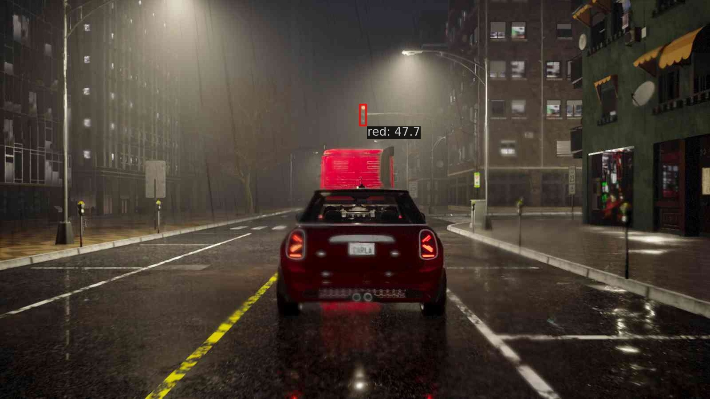

Collecting a high-quality dataset is a critical task that demands meticulous attention to detail, as overlooking certain aspects can render the entire dataset unusable. Autonomous driving challenges remain a prominent area of research, requiring further exploration to enhance the perception and planning performance of vehicles. However, existing datasets are often incomplete. For instance, datasets that include perception information generally lack planning data, while planning datasets typically consist of extensive driving sequences where the ego vehicle predominantly drives forward, offering limited behavioral diversity.
The CARLA Leaderboard 2.0 challenge, providing a diverse set of scenarios to address the long-tail problem in autonomous driving, has emerged as a valuable alternative platform for developing perception and planning models. Nevertheless, existing datasets collected on this platform present certain limitations. Some datasets appear to be tailored primarily for limited sensor configuration, with particular sensor configurations. Additionally, in some datasets, the expert policies used for data collection exhibit suboptimal driving behaviors, such as oscillations.
To support end-to-end autonomous driving research, we have collected a new dataset comprising over 2.85 million frames using the CARLA simulation environment for the diverse Leaderboard 2.0 challenge scenarios, making it the largest dataset in the literature to the best of our knowledge. Our dataset is designed not only for planning tasks but also supports dynamic object detection, lane divider detection, centerline detection, traffic light recognition, and prediction tasks. Furthermore, we demonstrate its versatility by training various models using our dataset.
Note: Any math expressions will appear as plain text unless you add a math renderer.
Experiments
3D Object Detection
We employed a non-transformer-based architecture for multi-view bird’s eye view (BEV)-based 3D object detection.
In this architecture, the multi-view camera images are initially processed by a convolutional image encoder,
specifically RegNetY-800MF, with a feature pyramid network based on BiFPN. We project the
feature levels at /8, /16, and /32 resolutions into the BEV representation using Lift-Splat projection.
Features from the previous two frames are warped to the current frame using egomotion and then concatenated
along the channel dimension, similar to BevDet4D. Gradients produced by the previous frames are not used to
update the image encoder. The resulting spatio-temporal BEV features are processed by a ResNet-based BEV backbone.
These features are then shared among task-specific heads.
We utilize RQR3D for BEV-based 3D object detection. RQR3D reparametrizes the regression targets for the 3D
bounding boxes and implements this reparameterized regression task on an anchor-free single-stage object detector,
introducing an objectness head to address class imbalance problems of single-stage detectors. RQR3D outperforms
widely-adopted CenterPoint-based approaches, yielding lower translation and orientation errors, which are crucial
for safe autonomous driving. When using LiDAR, we simply map the point cloud onto the BEV grid and concatenate it
with the projected image feature before temporal processing.
Table: The number of objects for 3D object detection
Ambulance
Construction
Crossbike
Walker
Car
Firetruck
Police
train
2,306
50,486
28,980
17,247
683,332
1,070
21,181
val
2,060
2,248
32,177
9,703
419,697
1,495
9,803
To align our dataset with the nuScenes benchmark, which provides annotated keyframes at 2 Hz, we downsampled
our original 10 Hz data to 2 Hz. This conversion ensures consistency in temporal resolution, facilitating fair
comparisons and compatibility with existing evaluation protocols.
Additionally, we selected scenarios whose names contain keywords such as accident, construction, dynamic,
pedestrian, hazard, emergency, and opposite to achieve a more balanced class distribution. The resulting
number of objects per category is summarized above.
We utilize two different sensor configurations: camera-only and camera–LiDAR. Evaluation
metrics are adopted from nuScenes, including mean Average Precision (mAP), Average Translation Error (ATE), Average
Scale Error (ASE), Average Orientation Error (AOE) and Average Velocity Error (AVE). (Average Attribute Error (AAE)
is excluded as it is not applicable for TaCarla.) The inclusion of LiDAR enhances depth estimation accuracy, leading to
improved localization and orientation predictions (lower ATE and AOE). The camera-only configuration exhibits higher errors
due to the inherent challenges in depth estimation. The detailed class-wise performance metrics are presented below,
illustrating the comparative effectiveness of both approaches.
Table: Camera-only 3D object detection performance
Class
AP
ATE
ASE
AOE
AVE
Car
0.459
0.444
0.147
0.012
0.559
Crossbike
0.324
0.242
0.094
0.057
0.165
Walker
0.426
0.456
0.885
1.333
0.292
Police
0.381
0.249
0.056
0.011
0.048
Construction
0.419
0.665
0.812
1.125
0.065
Ambulance
0.098
0.440
0.132
0.065
0.525
Firetruck
0.140
0.487
0.155
0.004
0.618
Overall
mAP: 0.32
mATE: 0.43
mASE: 0.33
mAOE: 0.37
mAVE: 0.32
Table: Camera–LiDAR 3D object detection performance
Class
AP
ATE
ASE
AOE
AVE
Car
0.716
0.173
0.125
0.022
0.399
Crossbike
0.556
0.113
0.086
0.076
0.119
Walker
0.527
0.152
0.885
1.304
0.277
Police
0.486
0.082
0.052
0.018
0.038
Construction
0.657
0.253
0.821
1.125
0.098
Ambulance
0.428
0.254
0.100
0.074
0.283
Firetruck
0.452
0.270
0.108
0.002
0.344
Overall
mAP: 0.55
mATE: 0.19
mASE: 0.31
mAOE: 0.37
mAVE: 0.22
Lane Detection
Table: Centerline and Lane Divider Detection Results of TopoBDA architecture for TaCarla Dataset
Detection Task
APf
APc
F11.5
Centerline Detection
58.2
60.9
73.8
Lane Divider Detection
N/A
60.2
75.6
Lane detection consists of two sub-tasks: lane divider detection and centerline detection. For the lane divider and centerline
detection tasks, Chamfer Distance-based Average Precision (APc) and Fréchet Distance-based Average Precision
(APf) metrics were utilized. These metrics evaluate geometric similarity between predicted and ground-truth polylines.
For APf, thresholds are 1, 2, and 3 meters; for APc, thresholds are 0.5, 1, and 1.5 meters.
The F1 metric is included (threshold set to 1.5 meters in our study); 11 ground-truth points are used for all metrics.
For training both centerlines and lane dividers we used the TopoBDA architecture, which incorporates specialized attention structures and
polyline training practices derived from TopoMaskV2. The Bezier Deformable Attention mechanism focuses attention around Bezier keypoints,
improving detection and representation of elongated and thin polyline structures.
Bird's Eye View (BEV) results demonstrating the performance of TopoBDA on the TaCarla dataset. GT denotes the ground truth,
and Pred denotes the predictions. GT + Pred shows the overlaid results of both.

Outputs of the FCOS traffic light model (red and green examples).
Traffic Light Detection
The dataset contains 238,780 training and 187,987 validation images with traffic light instances.
Each image contains a single traffic light instance with three classes: red, yellow, and green.
Every instance is labeled with a 2D bounding box and class. We used an off-the-shelf single-stage object detector, FCOS with
ResNet-50 backbone, as a baseline. We trained with a 1× schedule (12 epochs) and learning rate 1e-3, decayed by 0.1 at
epochs 8 and 11. COCO-style AP and AP50 are reported below.
Table: Traffic Light Detection task results in TaCarla.
Model
AP
AP50
FCOS
59.5
88.2
Planning
Waypoints from ground truth (Top Left), PlanT (Top Right), Transfuser (Bottom Left), and DiffusionDrive (Bottom Right) models.
For the planning task, we trained three baseline agents: Transfuser, DiffusionDrive, and PlanT.
Transfuser and DiffusionDrive were chosen due to their success on Navsim. Both agents use a ResNet-34 backbone with 3 forward-facing cameras
and LiDAR. Cameras are cropped and concatenated into a single image of size 256×1024 and LiDAR point clouds rasterized
into a BEV of size 256×256. Ego status input contains velocity, acceleration and driving command. Driving commands are computed
as in Navsim. Annotated lane-guidance waypoints are classified by checking the lateral distance of the point 15 m ahead of ego; threshold is 2 m.
DiffusionDrive was trained for 6 epochs and Transfuser for 3 epochs with learning rate 7.5×10-5 on 8 NVIDIA A100 GPUs
with total batch size 64. Training set scenarios were filtered with driving score > 70. During training we sampled ground-truth trajectories
at 2 Hz (8 waypoints for a 4 s horizon). Implementation follows DiffusionDrive where we used 20 anchors clustered from our dataset.
During evaluation we used 2 denoising steps as in the Navsim challenge.
PlanT was trained for 50 epochs, batch size 16, learning rate 1e-4. PlanT uses ground-truth information—training it verifies
dataset labels.
For evaluation we provide open-loop and closed-loop results. Open-loop metrics are ADE (average displacement error), FDE (final displacement error),
AHE (average heading error) and FHE (final heading error) between predicted and ground-truth trajectories as in NuPlan. Metrics are provided for
prediction horizons of 1 s, 2 s and 4 s at 2 Hz sampling. We used the Town13 validation set limited to 400-frame episodes. Closed-loop evaluation
was run on 36 simplified scenarios within the CARLA Leaderboard V2 framework. Scenario-specific results are in the Appendix.
Table: Open-loop results on validation set with 1s, 2s and 4s planning horizons (H)
Model
Input
H (s)
Results
Camera
LiDAR
GT Box
Ego Status
ADE
FDE
AHE
FHE
DiffusionDrive
4
2.69
5.58
0.27
0.21
✓
✓
✓
2
1.14
2.14
0.21
0.21
1
0.51
0.78
0.12
0.12
PlanT
4
—
—
—
—
✓
2
1.03
1.71
0.36
0.34
1
—
—
—
—
Transfuser
4
2.29
4.97
0.23
0.27
✓
✓
✓
2
0.91
1.74
0.23
0.27
1
0.40
0.59
0.22
0.22
Visualization
Explore interactive visualization tools and sample frames below.
Select Episode (interface screenshot)
BEV Visualization
Front Camera View
Citation
@inproceedings{2025tacarla,
title = {TaCarla: A comprehensive benchmarking dataset for end-to-end autonomous driving},
author = {TaCarla Research Team},
year = {2025}
}